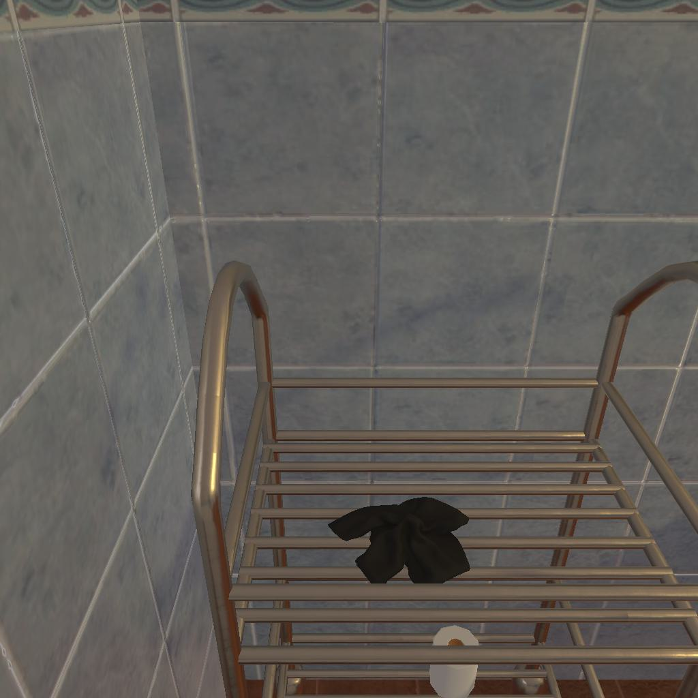

---------------------------------------------------------task: 25---------------------------------------------------------
--------------------------------------------------------------------------------------------------------------------------------------------------------------------
--------------------------------------------------------------------------------------------------------------------------------------------------------------------
Step:--------------------------------------------------------------------------4-------------------------------------------------------------------------------
----------------------------------------
VLM Prompt:
Image1:
Image2:
**Instruction**
1. Analyze the provided images to identify all visible household objects and compare the difference between images (e.h. whether the object is opened or not and taken on hand or not), focusing on those relevant to the task description "find two dishsponge and put them in cart."
2. Use the analysis of images and the task hint "The agent must find an object of the desired type, pick it up, find the correct location to place it, put it down there, then look for another object of the desired type, pick it up, return to previous location, and put it down there with the other object." to answer the question: what is the most reasonable action in the choices for the task description "find two dishsponge and put them in cart"?
3. Decide and write the answer using the template: The answer is: (i): , where i is the real number. If there is no desired object in images, search every place based on **Initial Observation** to find the object. And if no one is exactly correct, choose a similar answer.
**Initial Observation**
You are in the middle of a room. Looking quickly around you, you can see bathtub (1), bathtubbasin (1), cart (1), toilet (1), garbagecan (1), toiletpaperhanger (1), shelf (1-4), sink (1), sinkbasin (1), handtowelholder (1)
**Answer Choices**
(1): go to bathtub 1
(2): go to bathtubbasin 1
(3): go to toilet 1
(4): go to garbagecan 1
(5): go to toiletpaperhanger 1
(6): go to shelf 1
(7): go to shelf 2
(8): go to shelf 3
(9): go to shelf 4
(10): go to sink 1
(11): go to sinkbasin 1
(12): go to handtowelholder 1
(13): take cloth 1 from cart 1
(14): take toiletpaper 2 from cart 1
**Answer**
Let's think step by step by following the instructions.
----------------------------------------
----------------------------------------
Original Response:
Firstly, we analyze the images provided. In both Image1 and Image2, we can see a cart with a dark-colored cloth or dish sponge on it. There are no other household objects visible in the images that are relevant to the task description.
Based on the task hint, the agent needs to find an object of the desired type, which is a dish sponge. Since we can see a dish sponge on the cart in both images, it is likely that the agent has already found one dish sponge and placed it in the cart.
For the next step in the task, the agent should look for another dish sponge to place it with the first one in the cart. However, no other dish sponges are visible in the provided images. Therefore, the agent must search every place based on the initial observation to find another dish sponge.
Considering the initial observation and the household objects listed, the most reasonable locations to look for a dish sponge would be in the sink, sink basin, or on a shelf near the sink.
The answer is: (8): go to shelf 3. If there is no dish sponge on shelf 3, the agent should continue to search other locations listed in the initial observation, such as the sink, sink basin, or other shelves.
----------------------------------------
----------------------------------------
>>> Refine Original VLM Response and Get Pure Action: go to shelf 3
----------------------------------------
-----------------------------------------------------------------
Running time: 17.17312502861023 seconds
Total Money: 12.789090000000003
-----------------------------------------------------------------
-----------------------------------------------------------------
Text Observation:You arrive at loc 8. On the shelf 3, you see a papertowelroll 1, a toiletpaper 1, and a soapbar 1.
-----------------------------------------------------------------
UNSUCCEED